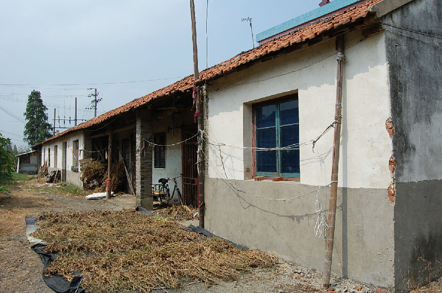

嘉兴市文物保护网 · 市级文物保护点 · 2020-11-06 · 原文

知青宿舍、食堂、厂房位于嘉兴市秀洲区新塍镇康和桥村（原张墩村），北和东紧临张墩村礼堂。据建筑形制和当地村民介绍，判断建于20世纪70年代。总占地面积541平方米，知青宿舍坐北朝南，砖木结构，共11开间，面阔38.85米，进深7.69米，顶高4.72米。有廊道，五架梁，屋顶铺有竹簾，现被村民购买作堆放杂物之用。食堂在宿舍南侧，坐东朝西，砖木结构，共三开间。面阔12.75米，进深8.46米。现被村民购买作堆放杂物之用。厂房在宿舍西北侧，坐北朝南，共5开间，砖木结构，人字型梁架，面阔18.97米，进深8.19米，顶高5.23米，以前为知青加工纽扣的厂房。现属于村委会，放置织布机。知青宿舍、食堂、厂房是文革时期的建筑，较完整地反映了文革时期知青们的生活和工作面貌，具有鲜明的时代特征，有较高的历史价值。2009年与张墩村礼堂合并公布为嘉兴市文物保护点。